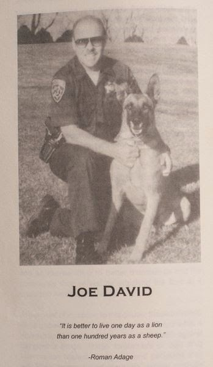

David Conner, a 43-year-old resident of Redding, California, will spend at least three years in a government cage in Idaho because a State Trooper in Oregon spied an open can of Monster energy drink in Conner’s rental car.
The presence of that foul but perfectly legal concoction,
Trooper Ryan Mills insisted, is an “indicator” of criminal activity. The
trooper also considered it suspicious that Conner was making a long trip in a
rented car during the middle of the week. Owing to his “experience and training,”
Mills insisted during his January 22nd testimony in Conner’s trial, he
simply knew that Conner “wasn’t just driving to grandma’s house.”
When Conner didn’t consent to a search, Mills said that he
would call a K-9 handler to conduct a drug sweep of the car. Ten minutes later
the officer told Conner that “there’s no local dog available” and wrote him a
citation for driving on a suspended license.
Rather than either impounding the car or having Conner
contact a friend to drive it away – as Oregon
law requires – Mills let him continue eastward on I-84. About fifteen
minutes later Conner was ambushed just inside the state line by Idaho State
Troopers Jason Cagle and Scott Tulleners, who acted on an “Attempt to Locate” call
informing them that Conner was operating a vehicle without a valid driver’s
license.
Neither Cagle nor Tulleners actually observed any suspected
criminal activity on Conner’s part. The only “evidence” in their possession consisted of double hearsay – Mills’ original report relayed to them second-hand through ISP Trooper Justin Klitch, whom Mills had contacted via
cellphone.
| Ryan Mills |

Mills conducted that back-channel conversation with an
officer outside his jurisdiction while ignoring repeated radio calls from his
own dispatcher. In doing so he altered the purpose of the stop – without probable
cause – from traffic enforcement to drug interdiction. He artificially
prolonged Conner’s detention while making arrangements for him to be stopped in
a state with more draconian drug laws and a more permissive official attitude
toward police misconduct.
The initial traffic stop occurred in the early morning hours
of March 5, 2014 on the freeway just outside of Ontario, Oregon. While lurking
in the freeway median, Mills saw a Red Nissan Ultima pass a large Semi trailer.
In his trial testimony, Mills claimed to have “visually” confirmed that the
Nissan was traveling at 70 miles an hour in a 65 MPH zone.
After noticing the unwelcome visual signature of a tax feeder
in his rearview mirror, Conner pulled onto an off-ramp, leaving a buffer zone
of about four feet on the driver’s side of the car. Rather than following
standard procedure, Mills approached the vehicle from the passenger side, which
allowed him an unimpeded view of the car’s interior. That choice may be unusual
for a routine traffic stop, but makes perfect sense if the objective is to
contrive “reasonable suspicion” to justify a search of the vehicle.
The trooper’s performance during the encounter was a
masterpiece of sociopathic manipulation, coaxing information from his detainee
through an interrogation disguised as a casual conversation.
Within seconds of approaching the car, Mills spotted a
beverage cooler in the seat next to Conner.
“Is it just water in that cooler?” asked Mills asked. “No
alcohol, or anything like that?”
This question – like all of the others posed by the trooper
in a voice oozing affected geniality -- was seen by the detainee as an
opportunity to cooperate, rather than an invitation to self-incrimination. Like
too many others in similar situations, Conner didn’t appreciate the trouble he
made for himself by acting on that invitation.
“There’s some Monster energy drink in there,” Conner
volunteered, unaware of the fact that Mills and others in his disreputable
occupation had been trained to pretend that consumption of an energy drink by a
motorist is an “indicator” of drug smuggling.
All Conner was legally required to provide were his driver’s
license, registration, and proof of insurance. He was under no obligation to
answer any of the questions posed by Mills or consent to a search of his person
or vehicle. Yet within minutes Mills extracted detailed information about the
starting point of Conner’s trip, his destination (both the city and specific
neighborhood), his occupation, his friends and associates, and his family
background.
Everything Mills said or did was intended to “build the
stop” by devising an excuse to search the vehicle. Every supposedly innocuous detail
wrung from Conner was presented by Mills during his January 22 testimony as
justification the subsequent warrantless search of the car by his comrades in
Idaho.
After briefly questioning Conner, Mills returned to his
cruiser, ostensibly to run Conner’s license and registration. His actual
purpose was to arrange a drug sweep of Conner’s vehicle. This probably explains
why the trooper ignored two replies from his dispatcher while after turning up
the radio in his cruiser so as to mask his back-channel cellphone conversation
with ISP Trooper Klitch.
Two minutes later, Mills asked Conner to step out of the
vehicle, which is never a good thing. He also continued the interrogation,
which was even worse.
“Do you have any luggage?” Mills began. “Are you carrying
any illegal drugs or large sums of cash?”
When Conner – who, once again, did himself no favors by talking
to the officer– replied in the negative, Mills made the inevitable demand for a
“consent” search of the vehicle.

“How come you don’t give me the ticket and let me go?” a
plaintive Conner asked after denying permission. “Is it because I’m from
California?”
Replying that“I’m not going to sit and debate” the
matter, Mills declared: “At this point I’m going to get ahold of a drug dog” –
which was what he had planned to do from the moment he decided to stop the
vehicle.
For about ten minutes Conner was left seething in his car. Roughly
seventeen minutes into the stop, Mills’ dispatcher finally succeeded in getting
his attention, informing him that Conner’s license had been suspended over a
five-year-old unpaid traffic ticket.
A few minutes later, Mills – this time in the company of a
second officer who has never been identified – approached the car again to
inform Conner that he was receiving a “warning” for speeding, and a citation
for driving without a valid license.
Under Oregon state law, Mills was required to act in a “community
caretaking function” by preventing an unlicensed driver from operating a
vehicle on public roads. A 2005 Ninth
Circuit Court of Appeals ruling in a case out of Oregon decrees that “The
state has the right to allow the driver to drive away with the vehicle only if he or she is able to do so in compliance
with all regulations intended to ensure the vehicle’s safe operation.” (Emphasis
added.)
Conner was less than a half-hour from his destination. It
wouldn’t have been difficult to arrange for a friend to take over driving
duties. If this didn’t work, Mills would have the option of calling
for a tow operator to impound the vehicle. A subsequent custodial inventory
would have found Conner’s luggage, which included a mummy-style sleeping bag in
which he had concealed a 13-gallon kitchen trash bag containing a substantial
quantity of marijuana.

A custodial inventory is not a search for criminal evidence.
Opening either the suitcase or the sleeping bag, or subjecting them to a drug
sweep, would have required a search warrant. In the event his car had been
impounded, Conner would most likely have taken his luggage with him. Under an Oregon Court
of Appeals ruling handed down two years earlier, Mills would have had no
authority to prevent Conner from taking his possessions with him, or to search
it without a warrant once it had been removed from the impounded vehicle.
In 2009, an Oregon man named Christopher Ray Dimmick was stopped
by a police officer who impounded his car after the driver produced an invalid
insurance card. When Dimmick tried to retrieve a backpack from the rear of the
vehicle, the officer refused to let him take it. A search of the backpack discovered
a digital scale, paraphernalia, and several bags containing drug residue.
Dimmick filed a motion to suppress the drug evidence as the
product of an illegal search. The Oregon Court of Appeals agreed that “the
backpack and the evidence found therein should have been suppressed” and
reversed the conviction arising from that discovery.
Conner admits that he was transporting marijuana. In
California, he has a medical marijuana prescription issued by Dr.
Howard Kerr Ragland allowing him to possess up to ten pounds of processed
cannabis. That fact would
avail him nothing in Oregon – where possession of several pounds of pot
is still treated as a felony – or in Idaho, where
marijuana use is seen as a
practice akin to communing with the Devil.
If Trooper Ryan Mills had followed Oregon law, however, Conner
would have escaped that encounter with little more than a fortified commitment
to avoid answering a police officer’s questions.
Mills, however, made the cynical calculation that his
diligent service of the lucrative prohibition racket would extenuate his
violation of a law supposedly intended to protect public safety.
“I’m giving you a warning on your speed and giving you a
citation for no operator’s license or suspended in California,” Mills told Conner,
who was both relieved and puzzled. The driver was informed he had “an optional
court appearance on April 9th at 10:00 a.m. at the Malheur County
Justice Court. You’re not required to show up.”
After explaining how Conner could pay the extortion note without the hassle of a hearing, Mills handed the driver the paperwork.
After explaining how Conner could pay the extortion note without the hassle of a hearing, Mills handed the driver the paperwork.
“Take care,” the trooper said by way of a farewell, pivoting
on his heel and striding back to his cruiser.
“I just wasn’t really sure of what was going on,” Conner
recalled to me shortly after his trial. “I had no knowledge of the suspension
[and] thought he would have warned me not to drive if I was not supposed to.”
After Conner drove away, Mills – once again using his
personal cellphone – contacted Klitch to spring the trap.
As previously reported in this space, Trooper Klitch, who is
attached to the
High Desert Drug Enforcement Task Force, is
a veteran road pirate of some accomplishment. He is also facing a lawsuit
for a
pretext stop based on license plate profiling that led to the abduction and
harassment of an innocent senior citizen named Darrien Roseen in early 2013.
With the lawsuit pending against him -- and at least one other being prepared -- Klitch was reassigned to desk duty at the time of
Conner’s arrest. He has since been transferred from patrol duty and is now
employed as an ISP detective.
Klitch relayed the information from Mills to his colleagues Jason
Cagle and Scott Tulleners, who were lounging in their respective patrol cars by
the side of I-84 near the Middleton exit. Upon spotting the Red Nissan the two
predators assumed pursuit vectors, tailgating Conner until he pulled into a
service station.

Officer Chris Cullen from the Parma Police Department, who
had also been contacted by Klitch, quickly arrived with a drug-detecting dog
named Bosco. The canine “immediately alerted to the trunk of Conner’s vehicle,”
Tulleners wrote in his incident report.
Six Ziploc bags containing suspected marijuana were
confiscated from the rental car. Conner was arrested and offered an invitation
to become a snitch.
“They went right
after me, promising that they could make the whole thing disappear if I were
willing to cooperate with the DEA, informing on people and setting up buys,” Conner
told me. “I wasn’t interested, and told them I would only be speaking with an
attorney.”
The effort to browbeat Conner into becoming an informant
continued once he was taken to jail.
“The intake deputy at the jail said to me, `How much were
you caught with?’” Conner related to me. “I knew that I was being
video-recorded, and I said I would only talk to a lawyer. So that officer and a
couple of others tried to intimidate me, telling me that I would get `special
treatment’ if I didn’t cooperate.”
Conner was able to raise bail the following day and leave
the jail without enduring any further abuse. The “special treatment” was
inflicted by Canyon County Prosecutor Bryan Taylor.
The DA initially offered Conner a deal in which he would
serve a fixed sentence of one year in exchange for a guilty plea. That offer
was revoked when Conner filed a motion to suppress the results of the search
after his “driving without privileges” citation was thrown out by Justice of the Peace Margie
Mahony after she watched the dashcam video.
Since the initial traffic stop was invalid, the evidence
eventually obtained was the proverbial fruit of the poisoned tree. Furthermore,
even if Mills’ traffic stop had been legitimate, there was no probable cause to
justify the one Mills had arranged on the Idaho side of the border.
In his probable cause affidavit, ISP Trooper Scott Tulleners claimed that he had personally “observed” Conner break the law. This was a lie: As Tulleners admitted in his narrative, “Prior to stopping the vehicle, Oregon State Police informed us that the driver and sole occupant of the vehicle was suspended in California and also that the drive exhibited several indicators of trafficking controlled substances.”

Third-hand “knowledge” isn’t the product of direct
observation; it’s actually more akin to rumor. When cross-examined in Conner’s
trial, neither Trooper Tulleners nor Trooper Cagle could state specifically
which of them had “observed” Conner breaking the law, or which of them first
heard about his suspended license.
When Conner’s attorney pointed out that the officers were
retailing hearsay, Judge Bradly Ford parried that objection with a meandering
and unfocused ruling that meant, in substance, “It’s good enough for Canyon
County.”
By that time, Ford had already ruled against Conner’s motion
to suppress the drug evidence for the same reason. Conner’s trial was little
more than an exercise in validating a pre-determined outcome: If he wouldn’t
cooperate with the DA’s office, Conner was going to be convicted of possessing
five pounds of marijuana – and the state
would not be required to prove every element of that offense.
Under Idaho law, possession of more than five pounds of
marijuana carries a sentence of up to fifteen years in prison with a three-year
mandatory minimum. If Conner had cooperated with the DA, Taylor was willing to
stipulate that he had been caught with just under
five pounds of pot. When Conner insisted on asserting his rights, that amount
suddenly increased to just over five
pounds.
The amount of marijuana used in the prosecution depends entirely on the interests of the prosecutor.
The variable weight of the evidence used against Conner
reflects a cunningly wrought ambiguity in Idaho law: The prosecutor wasn’t required
to prove that Conner was actually in possession of five pounds of marijuana,
but only that the tested portion extracted from the five pounds of “leafy
substance” contained THC.
In her January 23 testimony, forensic investigator Keri
Hogan recalled that the test sample she extracted weighed one-tenth of a gram.
This minuscule amount was sufficient for a “qualitative analysis” of the
material, she insisted. When asked during cross-examination why she didn’t
conduct a quantitative analysis – that is, try to determine how much of that
five-pound haul contained THC – Hogan replied that the Idaho crime lab doesn’t
have a procedure for quantitative testing anywhere in the state.”
This systemic imprecision confers a significant advantage on
the prosecutor: A cooperative defendant caught with fifty pounds of suspected
marijuana can be offered a deal below the five-pound threshold, and one who
intransigently defends his rights can be threatened with the theft of fifteen
years of his life.
It should also be acknowledged that the state crime lab that
produces those conveniently imprecise test results employed technicians whoroutinely violated “policies and protocols” dealing with drug evidence over aperiod of several years, according to an internal audit conducted by the StatePolice in 2011. In some instances, lad technicians concealed drugs from
auditors; in one particularly horrifying episode, an ISP scientistordered a large supply of GHB – the so-called “date rape drug” – and concealedat least some of it from inspectors.
The Appellate Public Defender’s Office estimated that more
than 1,000 drug cases – including many that had resulted in conviction and
imprisonment – were affected by the scandal. Yet during Conner’s trial the
prosecution insisted that the crime lab was irreproachable and its findings
incontestable.

During Conner’s trial, the assistant DA and prosecution
witnesses repeatedly recited the familiar mantra about the “training and
experience” of the investigating officers to justify the intuitive leaps and
procedural shortcuts that resulted in Conner’s arrest.
Troopers Cagle and
Tulleners both testified that they had undergone extensive training through anarcotics enforcement consulting firm called Desert Snow. Although both Mills and Klitch also testified
about their extensive training and experience, neither specifically mentioned
Desert Snow – but the routines they employed in their videotaped encounters
make it clear that they were taught the same catechism.
Desert Snow was founded in 1989 by former California Highway
Patrol Officer Joe David. Thanks in no small part to a steady stream of federal
subsidies and consulting fees paid by police agencies, Snow now enjoys a seigneurial
lifestyle any drug lord would envy, including a yacht and a vacation condo in
Cabo San Lucas.


In 2004, with the help of grants provided by the Department of Homeland Security, Desert Snow established an unofficial police intelligence system called the Black Asphalt Electronic Networking and Notification System, which is accessible only to “registered law enforcement personnel.”
“Black Asphalt [serves] as a social hub for a new brand of
highway interdictors, a group that one Desert Snow official has called `a
brotherhood,’” reported the Washington Post. “Among other things, the site
hosts an annual competition to honor police who seize the most contraband and
cash on the highways. As part of the contest, Desert Snow encouraged state and
local patrol officers to post seizure data along with photos of themselves with
stacks of currency and drugs.”
This helps explain why Idaho State Troopers Cagle and Tulleners made a point of posing with the marijuana they had seized from Conner's rental car.
Winners of that annual Road Pirate competition “receive
Desert Snow’s top honorific: Royal Knight,” continued the Post. “The next Royal
Knight will be named at a national conference hosted in Virginia Beach” in March.
The whole point of drug interdiction, explains Desert Snow
marketing director Roy Hain (a former Kane County, Illinois Sheriff’s deputy)
is to “pull in expendable cash hand over fist.”
“The drug trade has proven to be recession proof,” Hain exulted
in his pseudonymously published book In Roads: A Working Solution to America’sWar on Drugs. “Americans have the assets to capitalize on this industry and
handsomely support public services during times of strife.” Money confiscated
through the government-licensed larceny called “asset forfeiture” can be spent
on “just about anything under a law enforcement agency’s roof.”
America’s freeways are arties through which flow
unimaginable amounts of money that can be diverted into law enforcement
agencies, writes Hain.
“The same techniques used by those very few drug trafficking
interceptors for detecting bulk drug distribution can be used to interdict the
laundering of drug cash,” he insists. All that is necessary is for police departments
to pay Desert Snow to tutor their officers regarding the “identifiable and
predictable profiles” of people who are carrying contraband or large amounts of
cash – and to convince judges and juries that drug interdiction officers possess
a Jedi-level facility for assessing the hidden thoughts and motivations of the
people they encounter.

“Desert Snow urges police to work toward what are known as
`consensual encounters’ – beginning with asking drivers whether they mind
chatting after a warning ticket has been issued,” observes the Post account. “The
consensual chat gives police more time to look for indicators and mitigates
later questions in court about unreasonably long traffic stops. They’re also
instructed in how to make their stops and seizures more defensible to judges.
Desert Snow training sessions include units on “roadside
conversational skills” and “when and how to seize currency.” The use of catch-and-release
tactics involving officers in multiple jurisdictions also appears to be part of the Desert Snow curriculum.
In April of last year, reported the Post, a California
Highway Patrol officer stopped a woman from Kentucky whose car was “littered
with food wrappers and energy drinks.” Using the same grooming tactics Ryan
Mills employed to draw David Conner into a self-incriminating conversation, the
California officer learned that the woman had visited California to attend a
funeral. Skeptical of that story, the officer asked the woman why she didn’t
fly. Not satisfied with her answer, the trooper let her go – but used the Black
Asphalt system to post her driver’s license number and a BOLO report (“be on
the lookout”) to officers nation-wide.

David Conner’s arrest was a textbook application of the
Desert Snow model: A “highway interdictor” conducts a pretext stop, uses his
practiced patter to engage in a “consensual encounter,” collects a few “indicators”
to expand the stop into a drug search, and then sends out an intuition-based
alert about the driver to fellow predators in another state.
Once the case
winds up in court, the Desert Snow alumni invoke their “training and experience”
to trump objections about misconduct or violations of due process.
This routine will occasionally encounter difficulty when it
is performed in front of a judge burdened with a modest respect for the Bill of
Rights. The prosecutor in David Conner’s case had the tremendous advantage of
presenting it before a judge in Canyon County, where the Fourth Amendment
appears to be extinct.
Shortly before the trial ended, the prosecutor, Canyon County deputy district attorney Dallin Cresswell requested a
jury instruction forbidding the panel to consider the legality of the traffic
stop in Idaho. Judge Ford dutifully recited that instruction to the jury, which
delivered the foreordained verdict.
“After the verdict was announced, two of the jurors
apologized to my attorney,” Conner recalled to me. “They said that they really
wanted to vote for acquittal because of the conduct of the police officers, but
that they had to follow the judge’s instructions.”
That claim is untrue, of course – but it was good enough for
Canyon County.
In an interview prior to the trial, Conner made it clear that he considered the trial a mere formality -- a prelude to at least three years behind bars waiting for his appeal to run its course. By the time he is up for parole, it's possible that Idaho will have joined several neighboring states in relaxing its "Midnight Express"-grade anti-marijuana laws.
Until then, Klitch, Cagle, Tulleners and their comrades will continue to prey upon Gem State motorists in search of cash and other valuables that can be plundered -- or contraband that can be seized in pursuit of a Desert Snow "Royal Knight" award, or some similarly trite bauble.
Anybody driving a car bearing a license plate issued by a state with a less draconian marijuana law is fair game for a pretext stop; anybody found in possession of energy drinks can expect to be subjected to a "drug sweep." Every traffic stop will follow the "consensual encounter" script provided by Desert Snow, with the officer seeking to seduce the unwitting driver into a compromising conversation.
People who find themselves on the receiving end of such treatment should understand that they cannot win at the games road pirates play -- and shut up. If they choose to offer any reply to an officer's questions, one perfectly suitable response would be: "You should know better than to ask, and I certainly know better than to answer."
Click here to download or listen to the most recent Freedom Zealot Podcast.
If you can, please help keep Pro Libertate online. Thank you, and God bless!
Dum spiro, pugno!
Dum spiro, pugno!
10 comments:
As if you needed more evidence that talking to cops never leads to anything good.
Keep your trap shut, and decline to answer any questions, demand to know when / if you are free to leave.
Drug dogs can be trained to perk up and act as if they, the dogs smells drugs. Maybe the cops don't teach this in the dog training school, maybe. But the cops know how to teach the dog this "trick" at hone, the handler's home the dog lives with the cop. All being said, how can any defendant's lawyer question the dog and ask the dog, 'did your handler teach you how to act like you smelled drugs even when you didn't? Did your handler signal you to act like you smelled drugs in this case?'
The whole drug dog thing is nothing but a scam to get around getting a legal search warrant.
Yes its understood the supreme court ruled that drug dogs are legal grounds for a search, probable cause. But dumb dogs can be trained to roll over, jump through hoops, play dead and many other tricks.
The bottom line is, drug dogs are nothing more than another scam, when a scam is needed to violate someone rights when a giving reason is needed. A commanded hit, is committing a crime, a felony it fact. All to find out if there is a legal reason to find out. if what that person owns can be under current laws taking away from them. The term, "law enforcement officers" is an oxymoron in the simplest terms.
A driver's license is an interesting thing. You prove proficiency , in theory, when you first get your license, and unless you give some evidence of non-proficiency later on, there is no reason to suspect that you lose or forget how to operate a car after a certain page on the calendar. The only reason your license 'expires' is so that the state can bilk you for some more money with renewal fees, and the only reason officers check for an expired license is so that the state can bilk you for some money with traffic citations. Road pirates, indeed.
2 words :
Jury nullification
More words:
http://en.wikipedia.org/wiki/Jury_nullification
Even more:
https://www.youtube.com/results?search_query=jury+nullification
Have fun and save someone! ;)
This guy Connor is a fool. First, he was traveling through a state with draconian marijuana laws with the stuff in his trunk. Second, he talked to the cops.
Much as I despise the police, and much as I hate the draconian war on drugs, you would have to be living in a lead mine to not know the two rules: Don't talk to the cops and don't travel long distance with contraband or large amounts of cash. You don't slap a bear!
Furthermore, rural Idaho freeway with a cop tailgating me? I'd be VERY tempted to brake check him. "Your honor, I braked heavily because there was a racoon in the road. Perhaps the officer can tell you why he was following too close to avoid a collision..."
These boys are playing a dangerous game. Keep pulling the tail on a tiger that outnumbers you and outguns you by several orders of magnitude and sooner or later, you're going to get bitten.
Mark Stevens destroys drug cases:
Check out Mark Stevens on Youtube or http://marcstevens.net/ or read up on the need for Corpus Delecti: In all prosecutions for crime there shall be Corpus delecti - an injury or loss with causation ie criminal intent, or a broken contract.
So if you didn't injure anyone you can't be prosecuted. Right?
Also Mark (MarkStevens.net) Teaches you to request leniency from the Judge because you've never been in court before:
"Your Honor, may I ask a few questions? Do I have the right to a fair & honest hearing, free from any bias, prejudice, or conflict of interest?"
Judge: "Yes."
You: Who signs your paycheck?" Judge won't answer because the STATE is prosecuting you & paying him! "I move this case be dismissed with prejudice for conflict of interest."
They did my boy wrong...! An energy drink huh, excuse me but that isn't much in the trunk and they show boat it like its the crime of the century. Smh. The law enforcement wouldn't stand a chance in California.... why..? Well look pigs
Pirates? Will these guys insult pirates. To call them pirates is the same as putting them on the same level as blackbeard, Henry Morgan, Charles Vane etc and these were better men that the fools.
And i say these pigs do not compare to the actual pirates why you ask actual pirates risk life, liberty and limb to get there plunder and quite a few had morals.
These pigs have no morals and do not risk anything seeing as the letter of the law is on there side.
This is modern crime low to no risk tons of pay.
Post a Comment